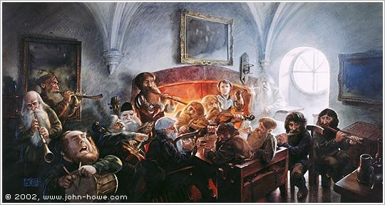
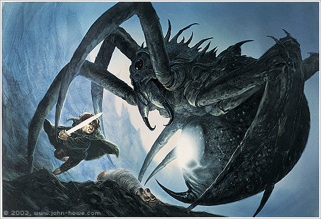
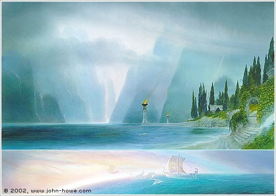
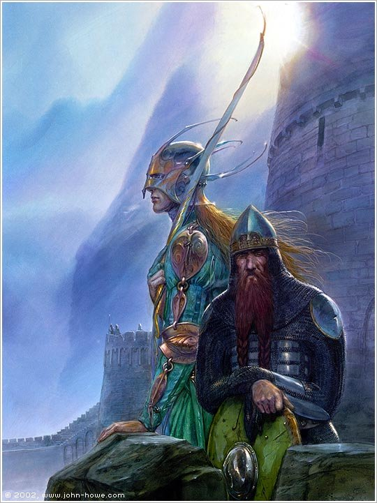

Frodo, Sam, and love.
Quick jargon guide
- LGBTQ+: lesbian, gay, bisexual, transgender, queer or questioning, with the plus standing in for the many identities the initialism doesn’t spell out (intersex, asexual, and more).
- Queer: once a slur, now widely reclaimed as an umbrella term for people who are not heterosexual or not cisgender. Some still find the word painful, which is worth remembering; it is used here in its reclaimed, affectionate sense.
- Queer coding: giving a character traits an audience will read as queer without ever saying so. Under censorship regimes like the Hays Code, coding was the only way queer characters could exist on screen at all.
- Hays Code: the Motion Picture Production Code (enforced 1934–1968), Hollywood’s self-censorship rulebook, nicknamed for Will H. Hays, the industry’s chief moral gatekeeper. Among much else it banned “sex perversion,” the era’s official term for any depiction of queerness, which exiled queer characters into subtext and code for a generation.
- Queer reading: interpreting a text through a queer lens, finding resonances the author may never have intended. A long, legitimate tradition, born of necessity: if the culture will not put you in its stories, you learn to find yourself between the lines.
- Subtext: the meaning underneath what a text says outright. Real, but famously easy to over-detect: subtext is in the eye of the beholder in a way that text is not.
- Shipping: fandom slang (from “relationship”) for wanting two characters to be romantically involved. Its earliest famous form, “slash,” comes from the punctuation in Kirk/Spock fan fiction of the 1970s.
- Canon / headcanon: canon is what the text actually establishes; headcanon is what a reader personally imagines to be true beyond it. Both are fine. Trouble only starts when headcanon is asserted as canon.
- Death of the author: Roland Barthes’s argument that a text’s meaning belongs to its readers, not to the author’s intentions. It licenses queer readings; it equally licenses my reading. It does not license telling other readers theirs is the only one.
- Homosocial: a sociologist’s word for close same-sex bonds that are not sexual: friendships, brotherhoods, comradeship. Most human societies have been full of them.
- Platonic love / philia: deep non-romantic love. The Greeks considered philia, the love between friends, one of the highest forms of love, not a consolation prize for people who couldn’t manage romance.
- Homohysteria: a term from masculinity research (Eric Anderson) for a culture’s fear of being perceived as gay, which polices how men are allowed to touch, dress, and speak to one another. High homohysteria produces the six-inch handshake gap; low homohysteria produces men who hold hands in the street and think nothing of it.
- Batman: not the one in the cape. In the British Army, a batman was an officer’s personal servant. In the trenches of the First World War, officer and batman routinely became devoted to one another in ways rank could not explain. Tolkien served on the Somme, and said plainly that Sam was drawn from the batmen he knew there.
- Toxic masculinity: not an insult aimed at men, but a name for a specific cluster of behaviours: emotional suppression, dominance-seeking, contempt for vulnerability, that harm men and everyone around them. The word “toxic” targets the behaviour, not the gender.
I want more queer stories, told louder, with bigger budgets. If you ship Frodo and Sam, if that reading brings you joy, you are welcome to it and to my genuine goodwill; fandom is a playground, not a courtroom. I (the person that is not you) have never read Frodo and Sam as gay. Not out of squeamishness, and not because I think a gay Frodo would diminish anything, but because what Tolkien actually put on the page seems to me a different but still very salient fictional relationship. He wrote two men who love each other completely, without irony, without fear, and without wanting anything from each other but the other’s good. He wrote a friendship that deepens into brotherhood, and he wrote it at a scale western culture would consider, if enacted in real-life, to be homosexual.
Consider what is actually in the text. Sam holds Frodo’s hand. He sleeps beside him, watches him while he sleeps, and cradles Frodo’s head in his lap on the slopes of a volcano at what they both believe is the (metaphorical and literal) end of the world. He gives Frodo the last of the water and lies about having drunk his share. He weeps, often and openly, and it is normal, expected, and I'd even say encouraged. When Frodo can no longer walk, Sam does not deliver a motivational speech about digging deep: he picks his friend up and carries him up the mountain.
I can't carry it for you, but I can carry you.
Sam Gamgee, The Return of the King
And when the Ring has gone into the fire and the mountain is coming apart around them, with no rescue in sight and none expected:
I am glad you are here with me. Here at the end of all things, Sam.
Frodo Baggins, The Return of the King

Where did this relationship come from? Not from nowhere, and not, by the author’s own account, from romance. Tolkien was a signals officer on the Somme in 1916, in a war that killed two of his closest friends. British officers were assigned batmen, enlisted soldiers who acted as personal servants, and in the trenches that arrangement of rank routinely turned into something more than standard friendship or colleagues: a devotion built out of shared mud, shared terror, and the daily work of keeping one another alive. Tolkien was explicit about where Sam came from.
My ‘Sam Gamgee’ is indeed a reflexion of the English soldier, of the privates and batmen I knew in the 1914 war, and recognised as so far superior to myself.
J.R.R. Tolkien
The men Tolkien watched hold their dying friends in Flanders were not, as a class, secretly in love (or, at least not all of them!). They were men who had been permitted, by extreme conditions, to love each other without embarrassment, because the alternative was to face the worst things in the world alone. Sam and Frodo touch each other constantly and tenderly, because they are the truest of friends, and are seeing the end of not only the world, but their little, idyllic corner of it.

I understand exactly why it many "ship" Frodo and Sam. For most of a century, queer people were forbidden from appearing in mainstream stories as themselves. Censorship regimes like the Hays Code banned gay relationships, so queerness survived on screen and page as code: a look held too long, a devotion slightly too intense, a villain slightly too fabulous. Generations of queer readers learned, out of necessity, to read between the lines, because between the lines was the only place they were allowed to exist. Hand that tradition a story in which one man carries another up a mountain and tells him he’d be glad to die beside him, and of course it pings every instrument on the panel.
So the ship itself is not my quarrel. My quarrel is with a specific, confident sentence, one you have seen a hundred times in one form or another: “They’re obviously gay; no straight man would ever act like that.” It asserts, as settled fact, that tenderness between men is evidence of romance, that touch is evidence, that tears are evidence, that devotion beyond some unstated threshold is evidence. This is not a progressive claim. That is the oldest rule in the toxic-masculinity handbook, repeated word for word with the values flipped: real straight men don’t hold hands, don’t cry together, don’t say “I’m glad you’re with me.” The homophobe says it as a threat and the shipper says it as a celebration, but the rule is identical. It hands the entire territory of male affection over to romance, and leaves friendship holding a firm handshake and a nod.
This matters because Frodo and Sam are one of the very few and best load-bearing examples our culture still has of the alternative. Their relationship is a systematic demolition of every plank in the toxic platform. Emotional suppression? They narrate their fear and grief to each other in plain words. Dominance? The entire relationship is built on service freely given, and Tolkien, the Catholic ex-soldier, makes the servant the hero of the whole book. Contempt for vulnerability? Frodo, the strong one at the start, is allowed to weaken, break, and be carried, and loses none of his dignity; his weakness is met with reverence, not disgust. The quest explicitly fails without the second man. Frodo does not make it up the mountain alone, he needs his truest, most loving, friend.
If Sam’s tenderness is exceptional, explained by eros, a special case, then ordinary male friendship is off the hook again: back to the handshake, back to the nod, back to expressing love through insults at a safe emotional (and definitely not too close physically) distance. The most subversive thing about the relationship, that two men who are not lovers get to love like this, is the thing the confident version of the ship erases. It repaints the wall in rainbow colours, but it is the same wall.

And the wall has a body count. Men in the anglophone world are living through what researchers politely call a friendship recession: the share of men reporting no close friends at all has multiplied several times over in thirty years, and loneliness now tracks with early mortality at levels that get compared, in the public-health literature, to smoking. One well-documented reason is homohysteria: not hatred of gay men as such, but fear of being read as gay, which teaches men to strip the affection out of their friendships until nothing is left that could be mistaken for evidence. Every time the culture confirms that closeness is evidence, that verdict gets easier to fear. This is a local and recent rule, not a human constant: men walk down the street holding hands in Kolkata and Kampala and think nothing of it; nineteenth-century men wrote each other letters that would read as love letters today and shared beds without anyone blinking. Abraham Lincoln did both. The six-inch gap between men on a sofa is not normal, it's the exception when you look at the longer stretch of our time on this planet with other men.
Notice, too, who else the “obviously romance” rule harms. Gay and bi men need deep platonic friendships as much as anyone, and under this rule their friendships are even more relentlessly read as something else. Asexual and aromantic people are told, in effect, that the deepest available human bond is one they are presumed not to want, as if philia were a runner-up prize. The Greeks knew better, and so did Tolkien’s closest friend, who wrote the book on the subject:
Friendship is unnecessary, like philosophy, like art… It has no survival value; rather it is one of those things which give value to survival.
C.S. Lewis, The Four Loves
Lewis and Tolkien, as it happens, are themselves a case study: two middle-aged dons who read their drafts aloud to each other in a pub for two decades, whose friendship carried one of them back to faith and pushed the other to finish the book this post is about. Under the modern evidentiary rule, they’re obviously a couple too. A world where Frodo and Sam must be lovers is a world where love between men has exactly one shape, and I want more shapes than that. So does every queer person I know: the whole point of the movement, as I understand it, was never “reclassify all tenderness as romance.” It was more kinds of love, all of them legitimate. Brotherhood is love.

In the books, at the Grey Havens, at the end of everything, Frodo kisses Merry, kisses Pippin, and last of all kisses Sam, and boards the ship. Tolkien puts the kiss right there in the text, and then sends Sam home, on the page, to Rosie and Elanor, to thirteen children and seven terms as mayor and a full, ordinary, sunlit life; the book’s literal final line is Sam coming home to his wife and daughter. The love between the two men was total, and it was never in competition with romantic love.
Let me offer a trade, because if you want a couple in the Fellowship, friends, the text has already provided, and frankly you are all looking at the wrong pair. May I present: an elf and a dwarf from two peoples who have despised each other for three thousand years. They meet, they loathe each other, they are forced to travel together. The elf is moved by the dwarf’s tears in Moria; the dwarf is undone by one look from Galadriel and asks for a single golden hair as his only treasure. She gives him three. (Fëanor, the greatest of the elves, asked her three times across two ages and got none. Gimli asked once.) They compete through an entire battle by keeping a running kill count like an old married couple at league darts night, they finish it at forty-two to forty-three and immediately start planning holidays to each other’s favourite destinations: you come see my caves, I’ll come see your forest. And then, when the story is over and everyone else has settled down, the appendices tell us, that they sailed to the Undying Lands together, Gimli becoming the only dwarf in the history of the world admitted to elvish paradise, “because of their great friendship, greater than any that has been between Elf and Dwarf.” Gentle reader: one of these pairs is a gardener carrying his grieving brother up a mountain, and the other is two confirmed bachelors from feuding families who bickered their way across a continent, exchanged tokens, toured each other’s homelands, and retired abroad together on a boat. I did not read Frodo and Sam as gay. But if you absolutely must ship somebody, do have the decency to ship the couple Tolkien practically gift-wrapped.

The artwork in this post is by John Howe, one of the two artists (with Alan Lee) whose paintings defined how a generation pictures Middle-earth, and who served as concept artist on Peter Jackson’s film trilogies. All images are © John Howe, all rights reserved, and are shown here with full attribution and links to his online gallery, which you should go get lost in. If John or his representatives would prefer these images removed, contact me and it will happen the same day.